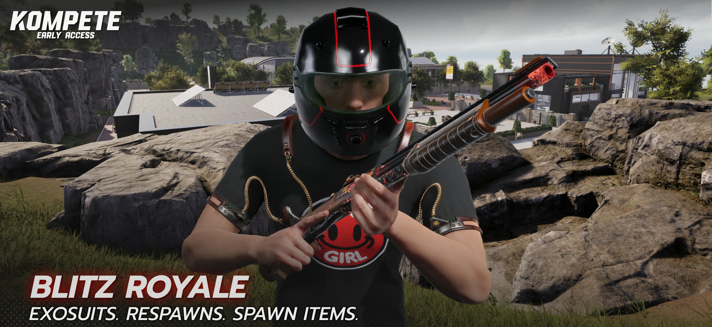
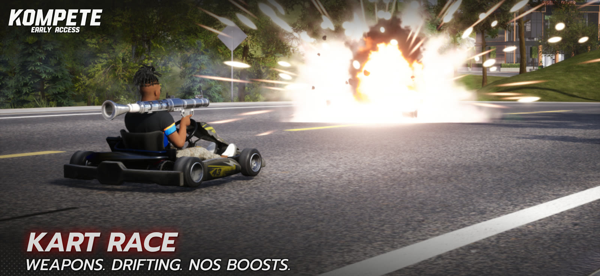
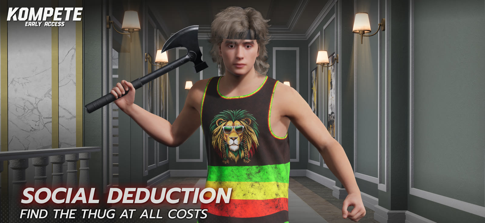
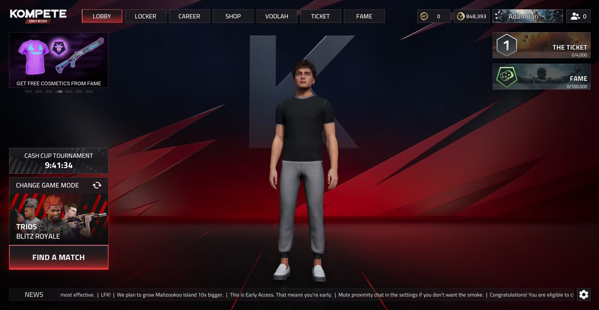

KOMPETE

KOMPETE is a cross-platform, all-in-one multiplayer game. Current game modes include Blitz Royale, Kart Race & Basketball. My primary role on the project is lead gameplay programmer & designer.
Responsibilities
- Designing & developing 3rd & 1st person shooter mechanics for a Battle Royale — core character, movement & inventory/item systems.
- Designing & developing gameplay features for a Mario Kart / GTA style online racing game mode.
- Developing gameplay features for a simulation-style online Basketball game.
- Designing & developing gameplay features for a Social Deduction game mode.
- Building AI logic for the battle royale (simulating other players).
- Building, maintaining & assisting with development of animation systems for the Battle Royale, Kart Racing & Basketball game modes.
- Writing & constructing the UI for the main menu & in-game HUDs, with considerations for multi-platform usage (gamepad, mobile touch screen & keyboard + mouse).
- Designing & developing game features with considerations for multi-platform usage.
- Working closely with the art & audio teams to deliver optimised gameplay mechanics.
- Continuous profiling & optimisation of my own and colleagues' work.
Screenshots


